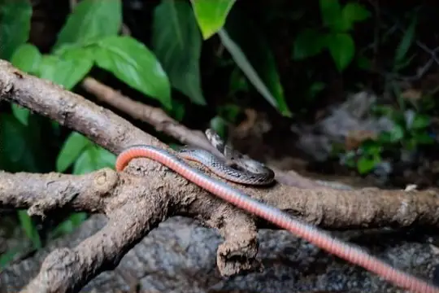
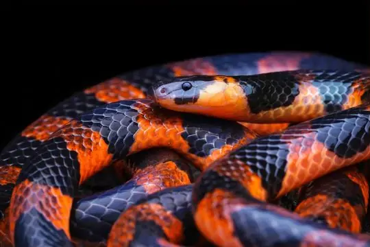
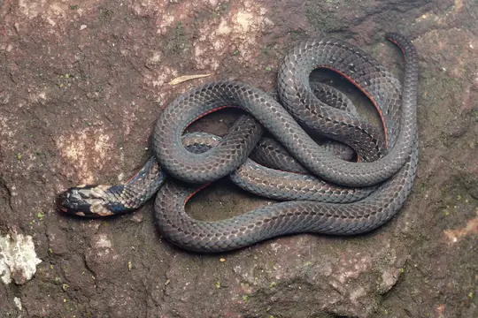
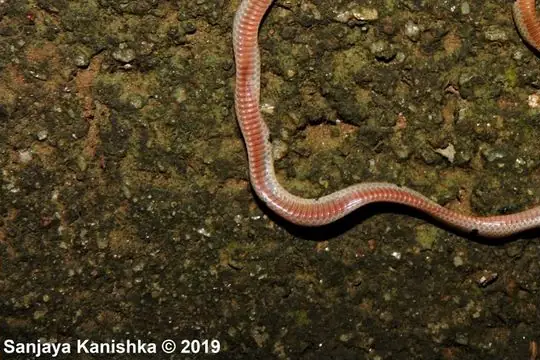
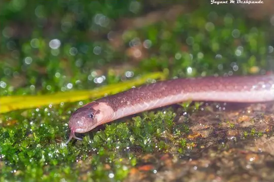
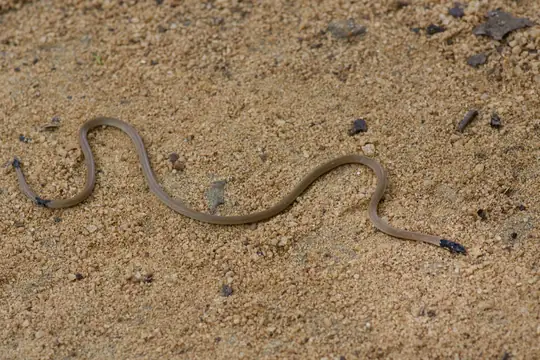
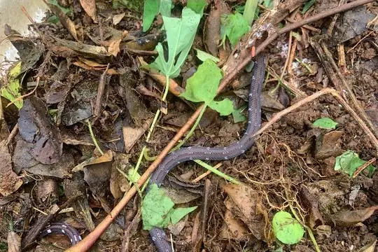
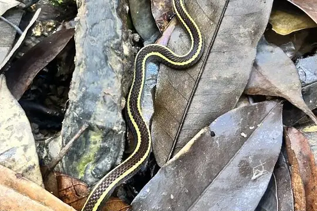

Calliophis
The genus Calliophis (family Elapidae) has 15 species in SnakeList (all venomous), recorded in 11 countries.
- 15species
- 15venomous
- 11countries
About the genus
A genus of the family Elapidae (cobras, mambas, coral snakes, sea snakes and relatives).
Species
Showing 15 species

Beddome's Coral SnakeCalliophis beddomei
Bibron's Coral SnakeCalliophis bibroni
Black Coral SnakeCalliophis nigrescens
Blood-bellied CoralsnakeCalliophis haematoetron Blue Coral SnakeCalliophis bivirgatus
Blue Coral SnakeCalliophis bivirgatus
Castoe's CoralsnakeCalliophis castoe- No photo yetDinagat Island Banded CoralsnakeCalliophis salitan

Indian Coral SnakeCalliophis melanurus
Philippine Coral SnakeCalliophis philippinus Speckled Coral Snake (maculiceps)Calliophis maculiceps
Speckled Coral Snake (maculiceps)Calliophis maculiceps Spotted Coral SnakeCalliophis gracilis
Spotted Coral SnakeCalliophis gracilis Striped Coral Snake (intestinalis)Calliophis intestinalis
Striped Coral Snake (intestinalis)Calliophis intestinalis Striped Coral Snake (nigrotaeniatus)Calliophis nigrotaeniatus
Striped Coral Snake (nigrotaeniatus)Calliophis nigrotaeniatus- No photo yetSulu Islands Banded Coral SnakeCalliophis suluensis

Two-stripped Coral SnakeCalliophis bilineatus
No snakes in Calliophis match.